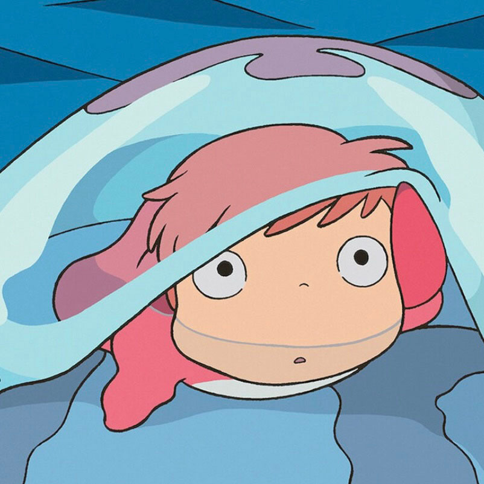
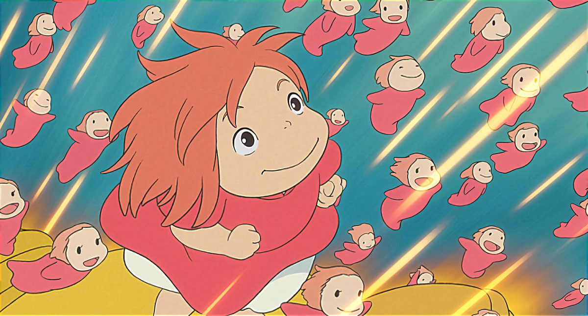
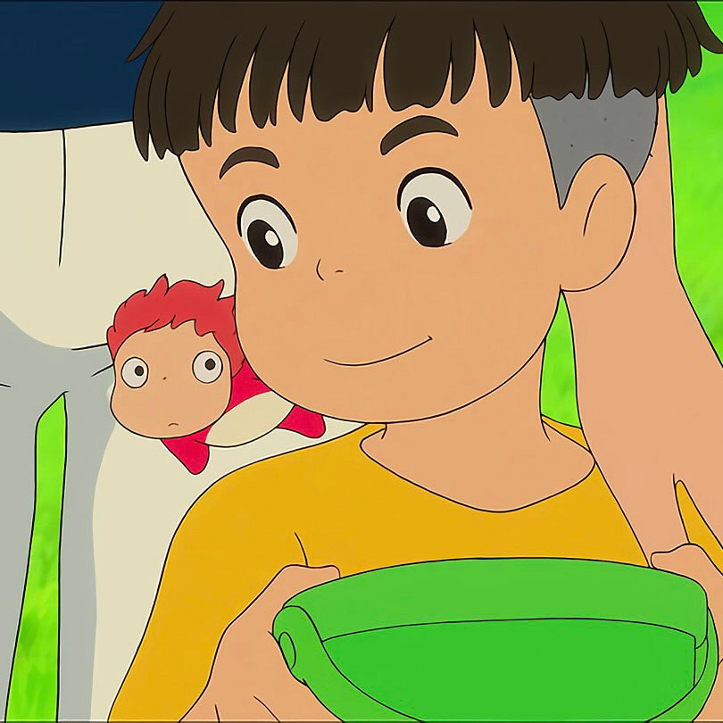
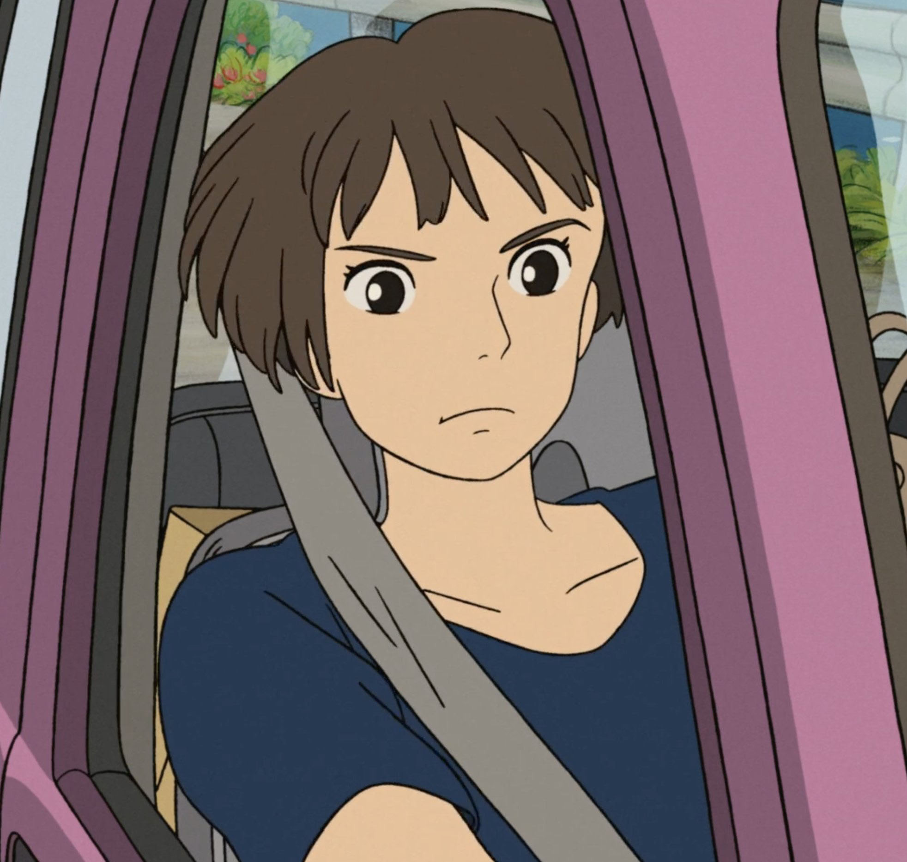
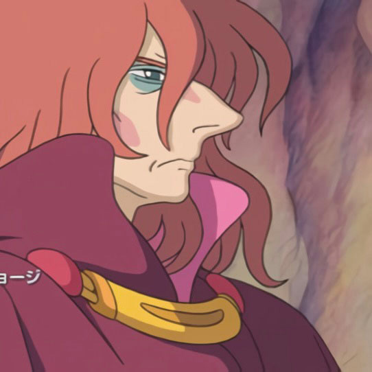
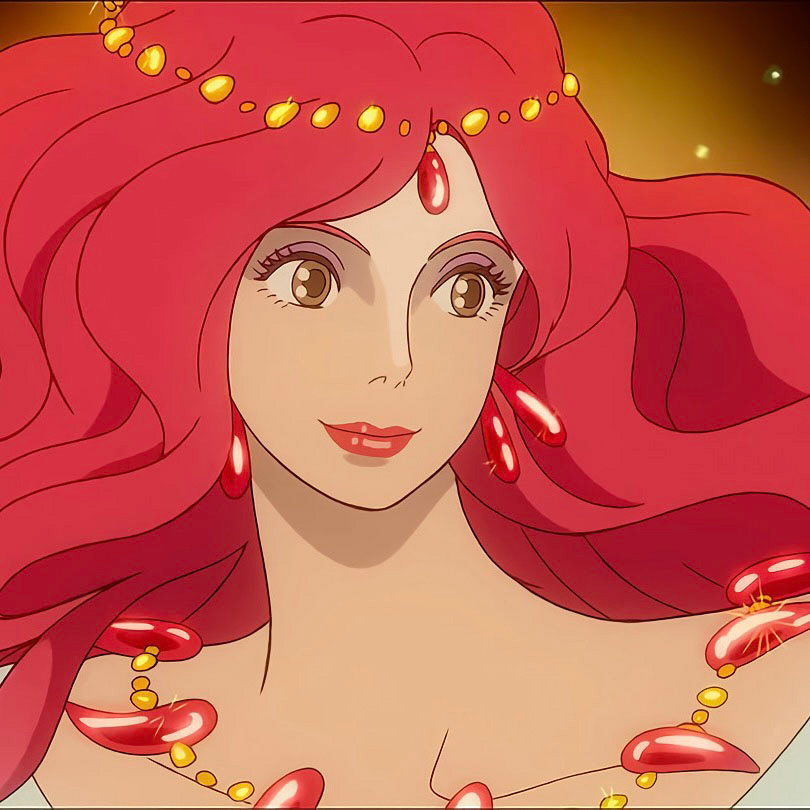
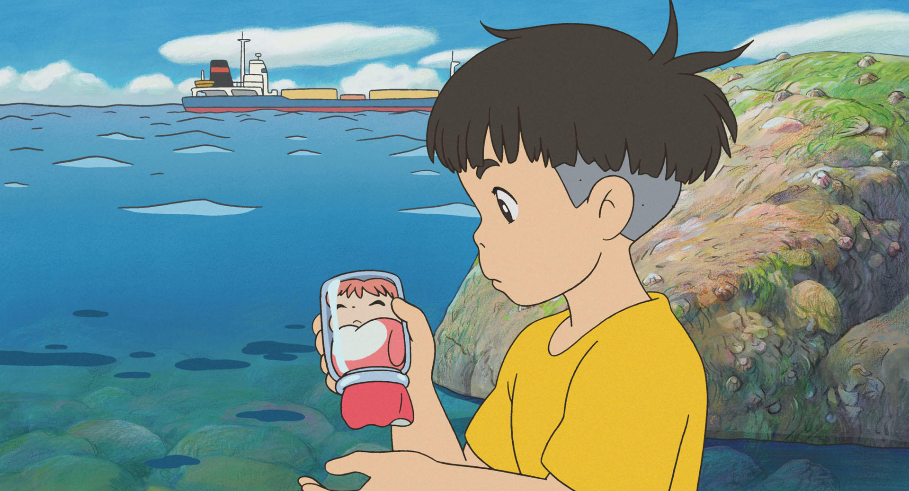
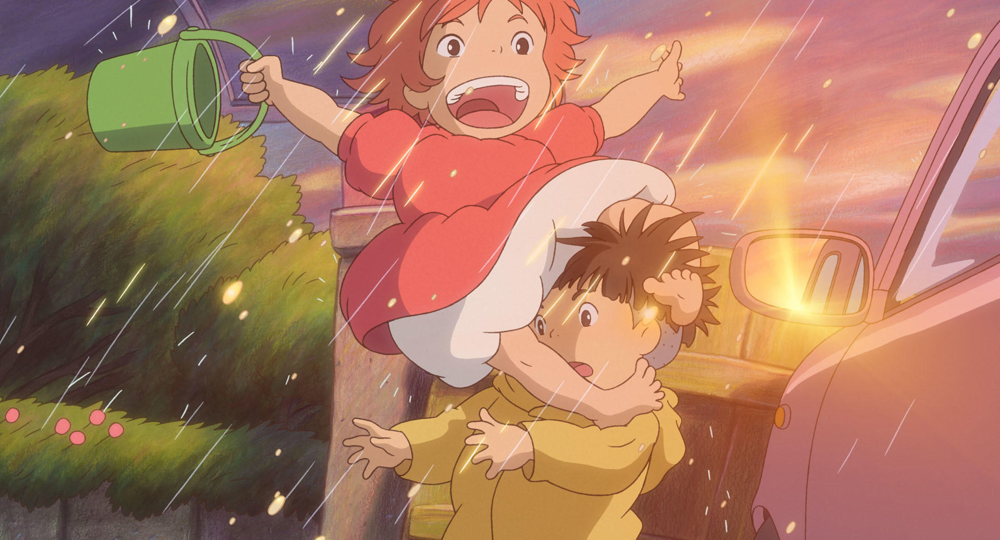
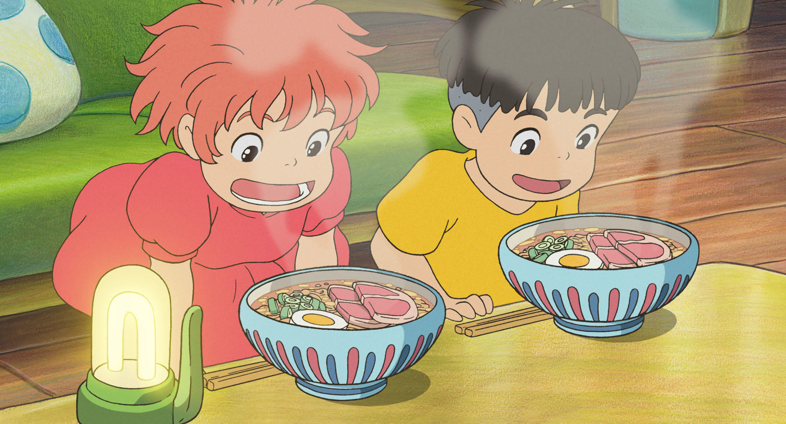
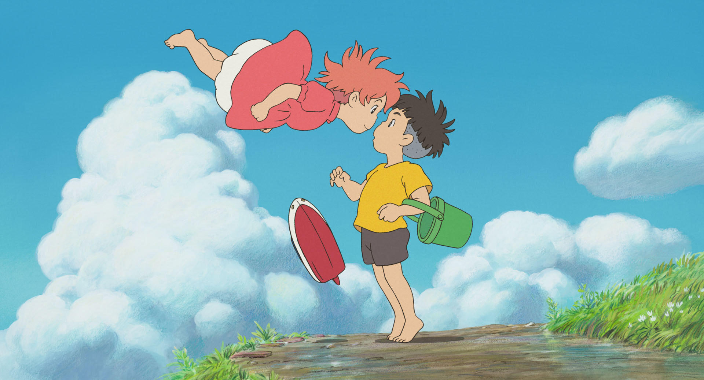

등장인물
-
본명은 브륀힐트. 영화의 주인공으로 신의 딸로 태어나 바다를 벗어나고 싶어하는 물고기 공주님이다.
포뇨(ver. 물고기)
-
후지모토가 모아둔 생명의 물을 마시고 인간이 된 모습이다.
포뇨(ver. 인간)
-
이 영화의 남자 주인공으로 해변가에서 우연히 유리병에 갇힌 포뇨를 구해주며 친구가 된다.
소스케
-
소스케와 둘이서 살고있으며 당차고 굳센 성격이다. 양로원에서 노인들을 보살피는 일을 한다.
소스케 엄마(리사)
-
바다를 함부로 하는 인간들을 혐오하며 포뇨가 소스케와 엮이지 못하게 막는다.
포뇨 아빠(후지모토)
-
생명의 신으로 인간인 후지모토와 결혼했다. 인간이 되고자 하는 포뇨의 뜻을 존중한다.
포뇨 엄마(그랑 맘마레)
ost/예고편
스토리
-
1.
바다생활에 싫증이 난 포뇨는 바닷속 쓰레기를
수거하는 그물에 휘말려 한 유리병에
갇히는 위기를 맞게 된다. 유리병에 낀 채로
해변가로 떠밀려온 포뇨를 소스케가 우연히
발견하게 되어 포뇨를 병에서 빼내주고
집과 어린이집으로 데려간다. 요양원의 노인들은
인면어를 데리고 오면 쓰나미가 온다며 두려워하지만
소스케는 이를 신경쓰지 않는다.
-
2.
그러나 곧 포뇨의 아버지인 후지모토는
강제로 포뇨를 다시 바닷속으로 데려간다.
포뇨는 바다에서 사는 것을 완강히 거부하고
후지모토가 자리를 비운 사이 여동생들의 도움으로
집에서 탈출하고 후지모토가 모아놓은 에너지를
모두 마신 후, 그 힘으로 인간이 되어
지상에 있는 소스케에게 찾아간다.
-
3.
다시 만나게 된 둘은 함께 집에서 밥을 먹고
차를 마시는 등 행복한 시간을 보내지만
포뇨가 지상까지 오기 위해 일으킨 파도가
쓰나미로 몰려오게 되었고 요양원에서 일을 했던
소스케의 어머니는 노인들이 걱정되어
아이들을 집에 두고 혼자서 차를 끌고 요양원으로 향한다.
-
4.
다음날 아침, 마을 전체가 물에 잠기게 된다.
혼자 나간 어머니가 걱정이 된 소스케는 포뇨의
마법으로 만든 배를 타고 어머니를 찾으러간다.
밖에 나가자 마을사람들이 배를 타고 마을의 언덕쪽으로
향하고 있었고 소스케와 포뇨는 사람들과 인사를 나눈다.
그러나 포뇨는 터널을 지나가던 중 힘을 잃고
다시 금붕어로 변해버린다.
-
5.
소스케의 앞에 후지모토가 나타나 모두가 있는 곳으로
가자며 소스케를 끌고간다. 그곳에는 정말로 어머니와
모두가 있었다. "포뇨가 인어라도 상관없느냐"고 묻는
포뇨 어머니의 질문에 소스케는 그렇다고 대답한다.
그러자 포뇨의 어머니는 포뇨에게 입맞춤을 하면
인간이 되는 마법을 걸고서는 모두를 지상으로 보내준다.
그리고 지상에 온 소스케와 포뇨는 입맞춤을 하고
포뇨는 인간으로 변하며 끝이 난다.